The Challenge
We identified high abandonment rates across multiple stages of the Tims Mastercard onboarding flow. Rather than optimizing individual high-abandonment pages in isolation, I advocated for a comprehensive end-to-end review. A cross-functional workshop involving Design, Product, Development, Legal, Product Analytics, and Customer Support teams mapped the entire experience and identified friction points.
Mapping the Journey
The team had plenty of abandonment data, but it was difficult to understand how individual drop-off points connected across the journey. I translated the data into a visual map that allowed the cross-functional team to see friction accumulate across the entire experience.
I created visual "Lego Blocks" — color-coded representations showing abandonment data per screen. This tool helped the team see exactly where users dropped off and which steps felt unnecessary or intimidating.

The problem wasn't concentrated in a single screen. Friction accumulated through repeated information entry, unnecessary confirmation steps, unclear legal language, eligibility uncertainty, and inconsistent post-approval experiences.
Problem Statement
The Process
Thirteen key improvements were identified, including:

1. Clarify Product Message
Replaced the carousel with a dedicated marketing page
A carousel forced Guests to work for information they needed to make a decision, and most never swiped past the first slide. A dedicated page let people evaluate the card's value on their own terms before committing to an application.
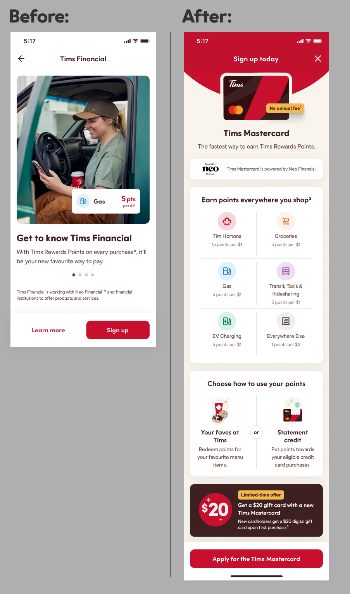
2. Simplify Legal Agreements
Consolidated four consent checkboxes into one
Four separate checkboxes read as four separate risks, creating hesitation at the exact moment we asked for commitment. Consolidating them into a single consent — with the full terms still one tap away — preserved legal rigour while removing the visual weight that made the step feel heavier than it was.
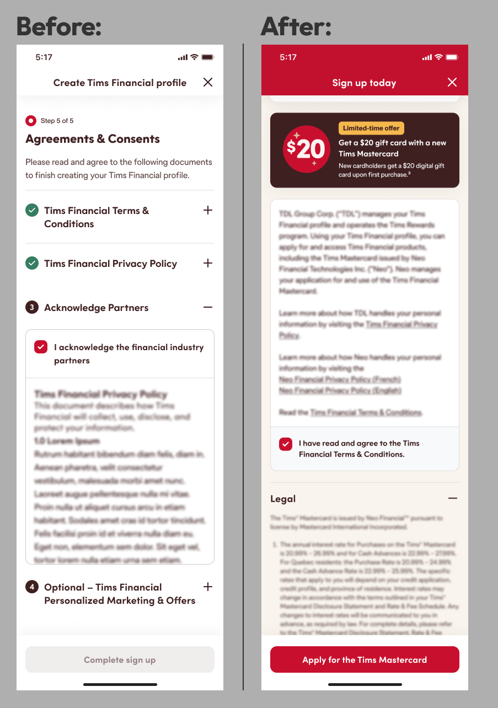
3. Remove Credit Confusion
Automated eligibility evaluation behind the scenes
Asking Guests to self-assess their credit eligibility introduced doubt and invited them to disqualify themselves before we ever evaluated them. Moving that determination behind the scenes meant people found out they qualified instead of guessing whether they might.
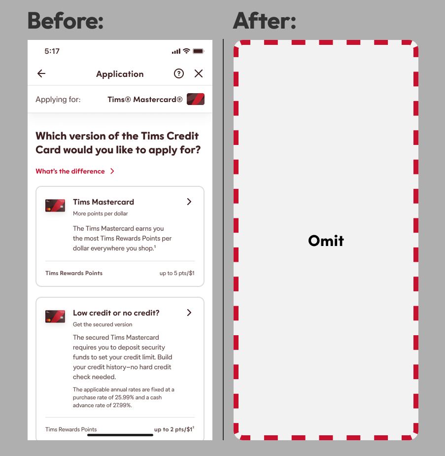
4. Quebec Compliance
Leveraged language preferences to eliminate a redundant step
We already knew each Guest's language preference, so asking again was a redundant step that existed to satisfy a system, not a person. Using data we already had eliminated the screen entirely while keeping us compliant.
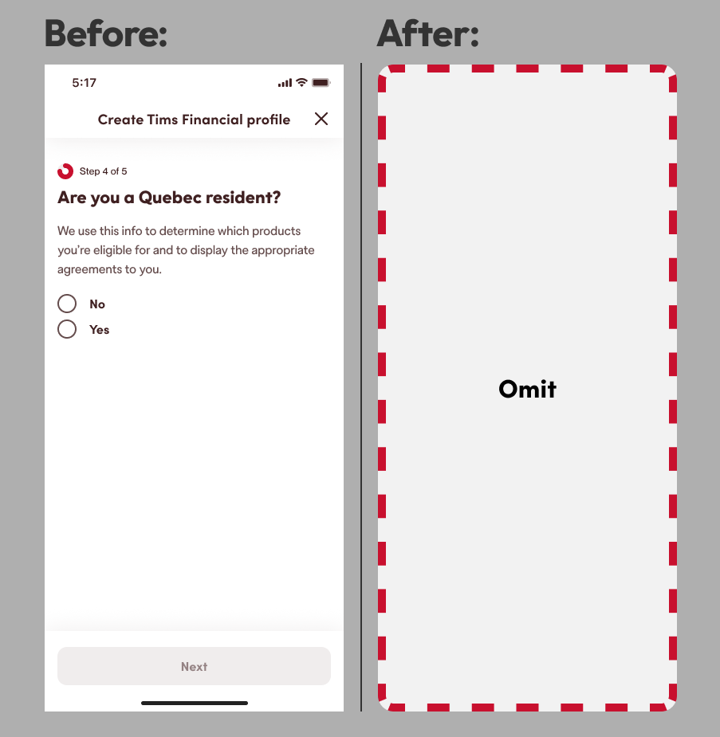
5. Merge Screens
Combined back-to-back information collection (name, DOB, address, employment)
Back-to-back screens each asking for one or two fields made a short form feel like a long interrogation. Grouping related information into logical sets reduced the perceived length of the flow and let Guests build momentum instead of restarting their focus on every tap.
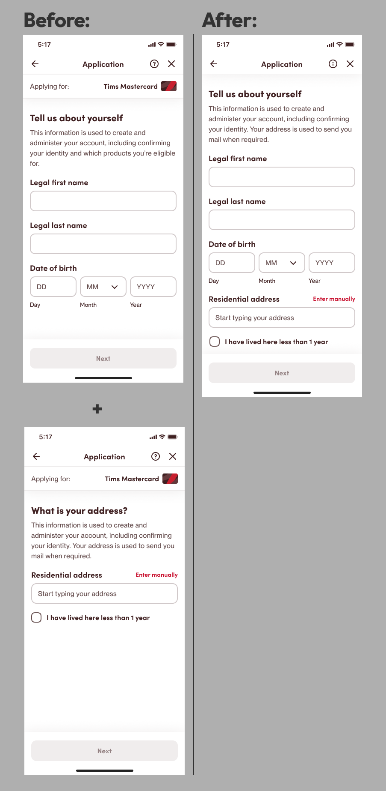
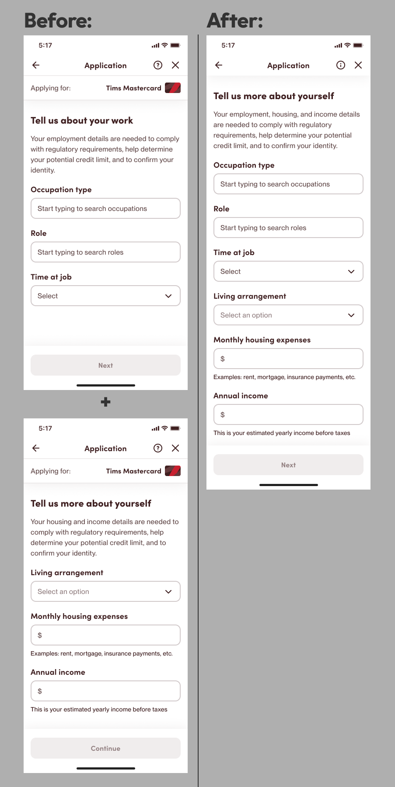
6. Humanize Copy
Rewrote legal/verification language into accessible explanations
Legal and verification language signals risk even when nothing risky is happening, and unexplained steps read as suspicious. Rewriting the copy to explain what we were doing and why turned moments of doubt into moments of reassurance — critical for a financial product where trust is the conversion.
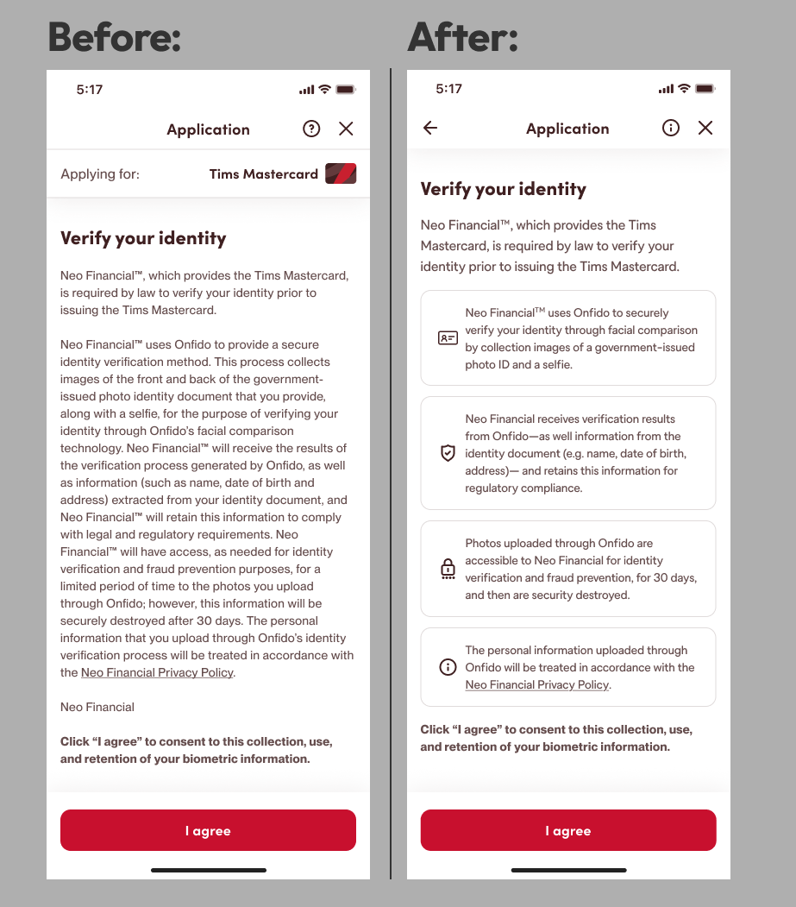
7. Remove Duplicate Confirmation
Eliminated a redundant shipping address screen
Confirming the same shipping address twice implied we hadn't listened the first time, undermining confidence in the system. Removing the duplicate respected the Guest's time and signalled that their input had been received.
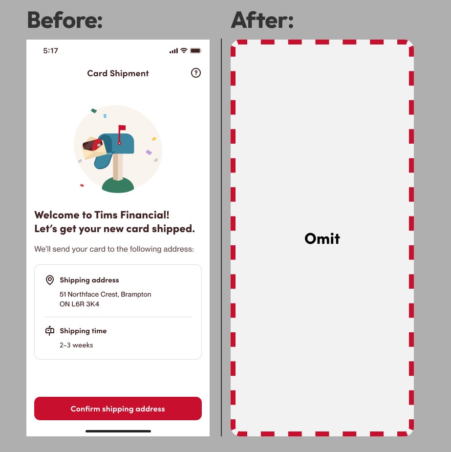
8. Celebration Redesign
Made the approval screen more encouraging
Approval is the emotional peak of the entire journey and the flow treated it like a receipt. Designing a genuine celebration rewarded the effort Guests had just invested and carried motivation into the setup steps that followed.
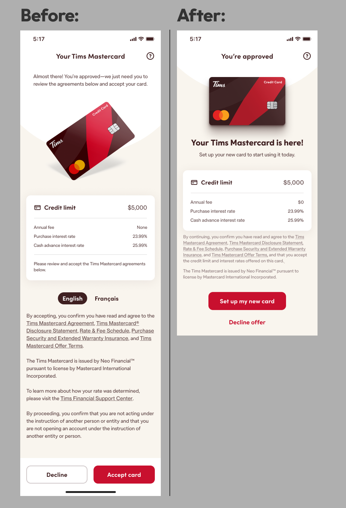
9. Maintain Momentum
Ensured CTA consistency across post-approval steps
Post-approval steps used inconsistent calls to action, so Guests who had just been approved lost the thread on what to do next — and an approved card that never gets activated delivers no value. Consistent CTAs made the path forward obvious at every step.
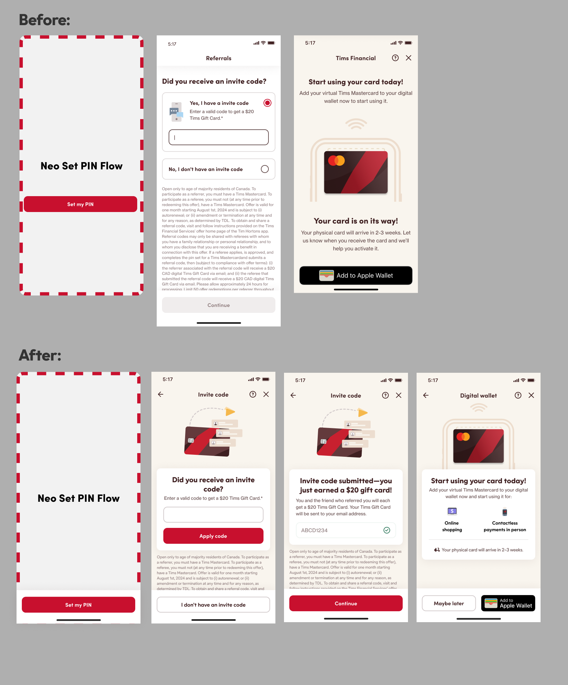
10. Unify Visual Design
Removed distracting steppers and oversized headers
Steppers and oversized headers constantly reminded Guests how far they still had to go while crowding out the content they were there for. Removing them made the flow feel shorter and more focused, and gave the experience the consistency Guests expect from a brand they already trust.
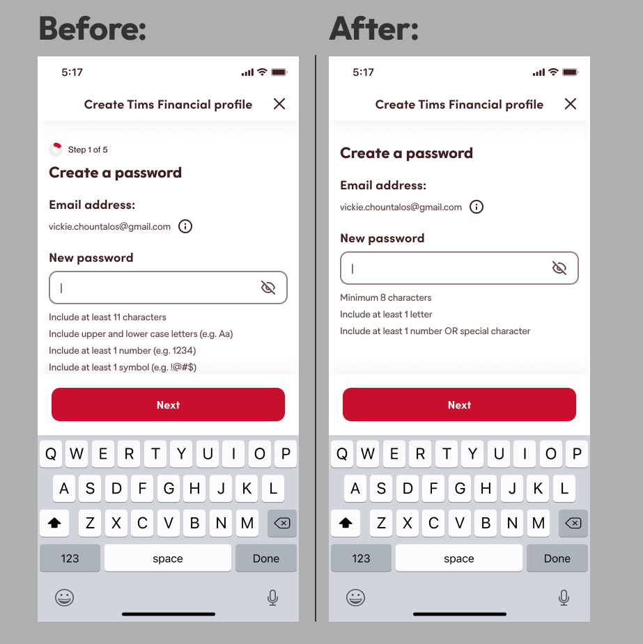
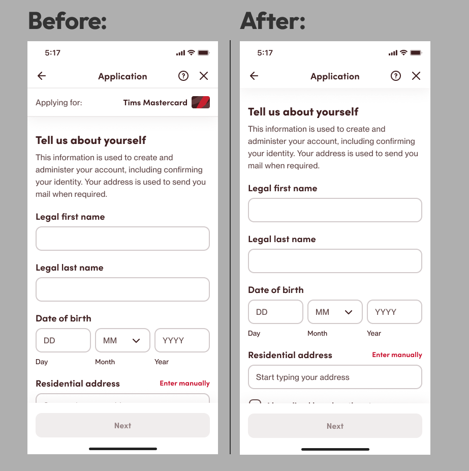
Results
My Contribution
I led the end-to-end UX redesign, facilitated the cross-functional journey-mapping workshop, translated abandonment data into design opportunities, and partnered with Product, Legal, Analytics, Engineering and Copy to bring the new flow into production.
Reflection
The biggest lesson was that the most important UX problems weren't isolated UI issues. They were friction created between systems, teams and stages of the journey. Mapping the experience end-to-end made those relationships visible and gave the team a shared framework for deciding what to remove, automate and simplify.
Looking at the journey holistically — rather than optimizing isolated screens — was the single biggest driver of impact. With more time, earlier user testing could have further refined some of these decisions.